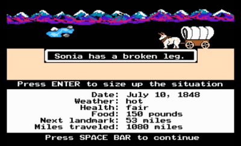
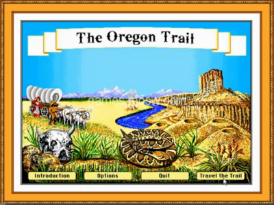
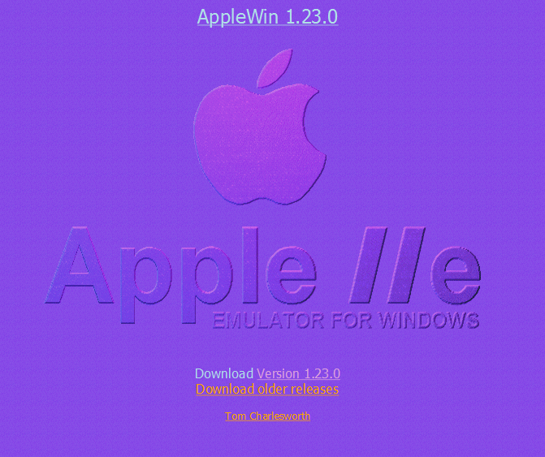
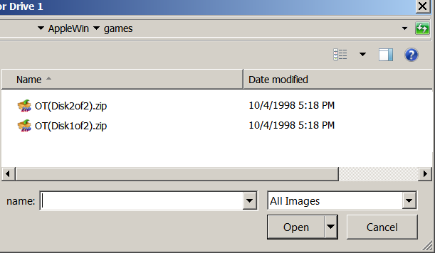
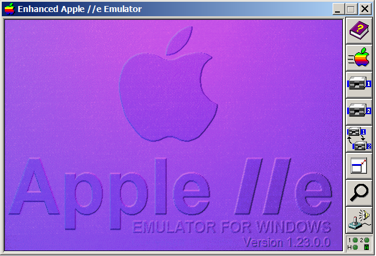
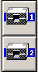
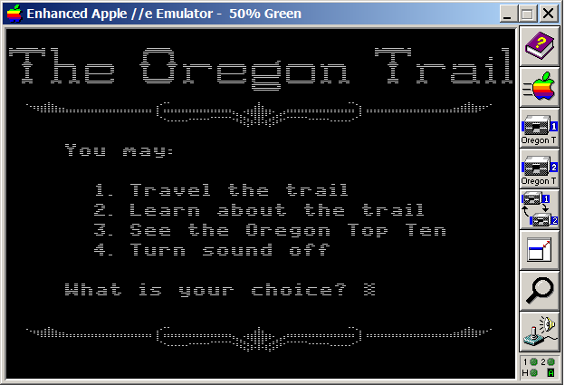
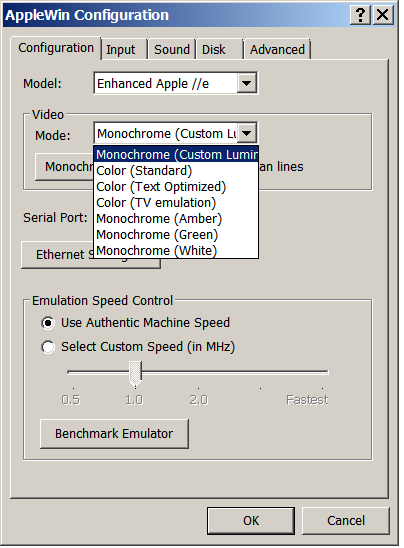

How to play the old Oregon Trail video game on your computer
Do you have fond memories of playing Oregon Trail on ancient computers? Re-capture that joy by playing the game for FREE on your Windows computer, using just a few simple steps!
Updated: added easy ways to play online (with any computer) at the Internet Archive.
- Play online
- Why download?
- Which version?
- Installing the 1980s version
- Installing the 1990s deluxe version
Play online, without downloading
If you are in a hurry, you can play either version online at the Internet Archive. All you need is a web browser (Firefox, Chrome, Safari, etc.) and a connection to the internet.
Why download?
If you decide you want to play when not connected to the internet, or you like to keep track of your scores: you'll have to install software on your computer.
Which version?
There are two main older versions of the game (if you ignore the recent re-makes).
1980s version with simple graphics

1990s "Deluxe" version with slightly more complex graphics

Installing the 1980s version (simple graphics)
[Thanks to http://www.dosgamers.com/apple-iie/applewin-apple-iie-emulator]
1. Download AppleWin (http://applewin.berlios.de/)

2. Unzip this file (probably named something like AppleWin1.23.0.0) into its own folder (called AppleWin).
3. Save this new folder somewhere you will remember (perhaps C:\AppleWin)
4. Create a new folder under AppleWin called games (C:\AppleWin\games)
5. Download the zip files for disk 1 and disk 2 of the 1980s version of Oregon Trail from http://www.virtualapple.org/oregontraildisk.html (you will see these disks in the right sidebar under Program Information and then Disks).
6. No need to Unzip these 2 files (OT(Disk1of2).zip and OT(Disk2of2).zip). Just move them into the folder you created (C:\AppleWin\games).

7. Click on the AppleWin icon for the .exe file (C:\AppleWin\Applewin.exe). This will open up a new window which acts like an old Apple II computer.

8. Click on the multi-colored "Apple" icon in the right sidebar.
9. Then click on "Disk 1" icon in the right sidebar (an old style floppy disk icon with the number 1 on it) and choose OT(Disk1of2).zip.

10. Oregon Trail starts up, but before you start playing, repeat the last step for Disk 2 (so that both disks are loaded and ready to use).

11. If you'd like a different color to your screen, choose the Joystick and Volume control icon in the right sidebar and choose a different video mode.
I have fond memories of the black screen with the green text.

Installing the 1990s version (deluxe)
If you remember the much more colorful version from the 1990s, you'll want to go a different route.
1. Download D-Fend Reloaded from http://dfendreloaded.sourceforge.net and install on your computer.
2. Download the Deluxe version of Oregon Trail from http://www.techspot.com/downloads/5839-the-oregon-trail.html and follow the instructions on the bottom of that page that tell you how to install it.